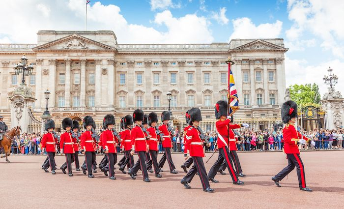
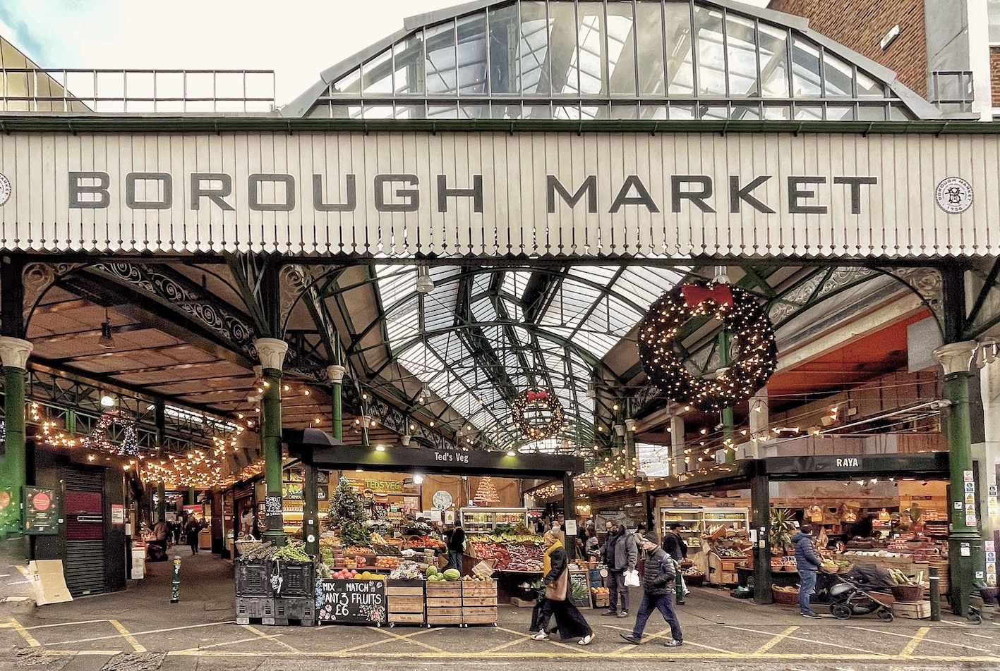
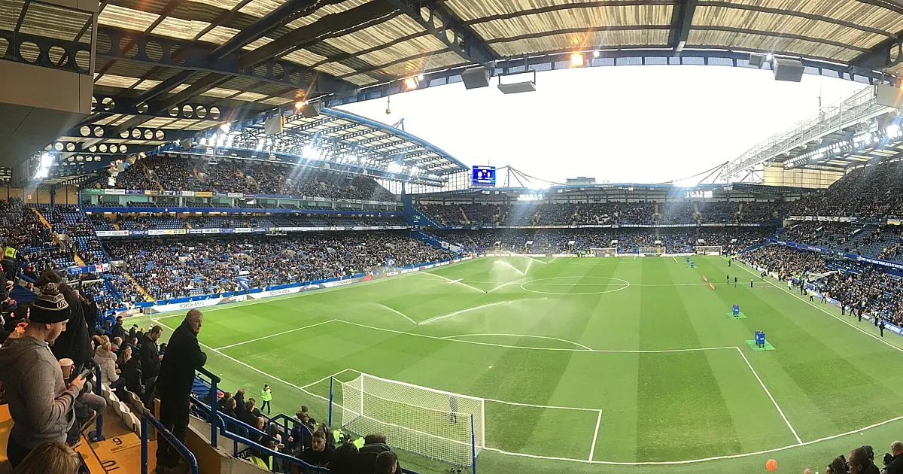
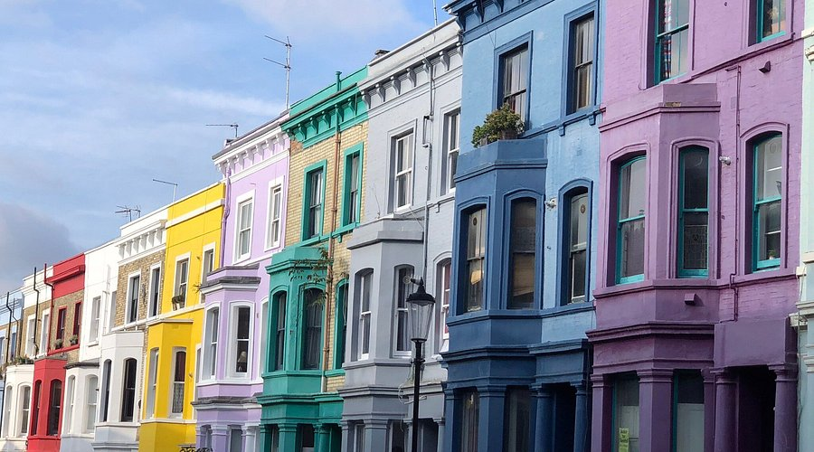
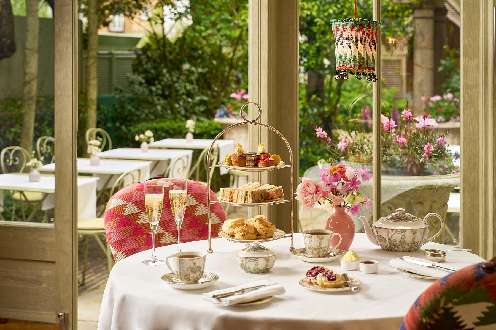
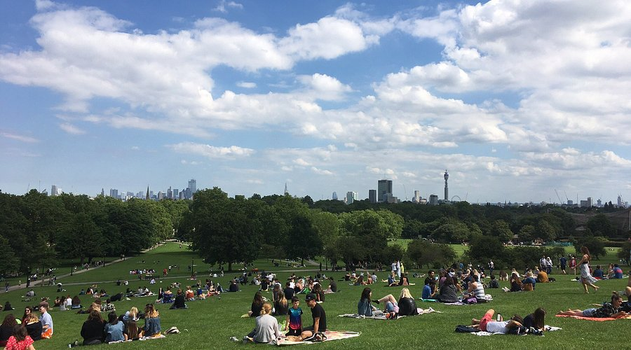

The Vibe
London honestly becomes your comfort city. At first it feels big and overwhelming, but once you get used to the Tube and the neighborhoods, it's one of the easiest places to live and explore. What makes London different is that every area feels like a completely different city. One day you're doing tourist stuff around Westminster, the next you're in Notting Hill or Shoreditch and it feels totally different.
The best way to do London is mixing a few major landmarks with slower days walking through neighborhoods, markets, and parks. You're not going to see everything—and that's fine.

Best For
- First-time travelers (familiar language, easy logistics)
- Museum lovers (free entry + world-class collections)
- Food explorers (diverse neighborhoods, market culture)
- Rainy day planning (so many indoor things)
What Actually Made Our Trip
Here's the thing about London—the best experiences aren't always on the postcard. Yes, you should see Big Ben. But the real magic is in the neighborhoods, the unexpected discoveries, and the moments that feel authentically London.
Borough Market
Go hungry. Seriously. Fresh pasta stands, sourdough, cheese, jams—it's food heaven. Best on a Saturday morning when it's packed but not overwhelmingly so.
Neighborhoods > Landmarks
Walk through Notting Hill on a Sunday, explore the street art in Shoreditch, get coffee in a tiny café in Fitzrovia. That's where London actually lives. You'll see more authentic London in an afternoon of wandering than in a week of tours.
River walks at dusk
Millennium Bridge to the Shard, or the South Bank at golden hour. Grab dinner and a view—doesn't have to be expensive. The Thames at sunset is genuinely one of those moments where you realize why people live here.

Castles & Royal History
London isn't just about royals, but they're kind of everywhere, so you might as well embrace it. The royal history adds this weird layer to the city where you're casually walking past palaces and ancient castles in the middle of modern neighborhoods.
Tower of London
Yes, it's touristy. But also genuinely fascinating. The crown jewels, the ravens, the medieval history—it's a time capsule in the middle of the city. Go early to beat crowds. The Beefeater tours are actually entertaining.
Westminster Abbey
Weddings, coronations, and nearly 1,000 years of history. The architecture is stunning, and there's something surreal about standing in a place where so much actually happened. Go on a weekday if possible.
Buckingham Palace + Changing of the Guard
The palace itself isn't open often, but the Changing of the Guard ceremony is free and weirdly captivating. Get there early (11:30am weekdays, 10:30am Saturdays), grab coffee nearby, and watch the pageantry.
Theatre Scene
London's West End is basically Broadway's cooler, older sibling. Tickets can be pricey, but there are hacks. The theatre scene is genuinely incredible, and catching a show feels very London.
Hit a West End Show
The big ones (Hamilton, Les Mis, Phantom) are pricey. But cheaper tickets exist for afternoon matinees, rush tickets, and TKTS booths. Even a smaller production is worth it.
Shakespeare's Globe Theatre
Standing room tickets are like £5. Yes, you might stand for 3 hours. Yes, it's worth it. There's something magical about watching Shakespeare where it was originally performed (well, reconstructed, but close enough).
Experimental Theatre
Fringe theatres in Soho, King's Cross, and Southwark showcase experimental work, comedy, and emerging playwrights. Much cheaper, often more interesting, and you'll feel like you discovered something real.
Football (Soccer) Culture
London is football obsessed. There are like six Premier League teams, and attending a match is an experience. The energy, the chanting, the absolute chaos—it's very London.

Watch a Match at a Pub
If stadium tickets are sold out or pricey, any pub on a match day is electric. Pick a team (you're allowed to change your mind), grab a pint, and get caught up in the atmosphere. Best on weekends.
Stadium Tours
Can't get match tickets? Arsenal, Chelsea, Tottenham, and others offer stadium tours. Walk the pitch, see the locker rooms, soak in the history. It's nerdy but actually cool.
Lower League Games
Championship or League One teams (still professional) have better availability and cheaper tickets. The atmosphere is often better too—less corporate, more fans.
Art, Fashion & Vintage Shopping
London is the capital of weird fashion, high art, and incredible vintage finds. You could spend weeks just shopping and gallery-hopping.
Museum Crawl (Free Entry!)
British Museum, National Gallery, V&A, Tate Modern—all free. Go when you have energy, not just to check them off. Spend an hour with the things that actually interest you, skip the crowds.
Portobello Road Market
Saturday mornings. Vintage clothes, antiques, street food. It's touristy but genuinely fun. Hunt for weird vintage finds, vintage Levi's, band tees, random treasures.
Brick Lane & Shoreditch
Street art, independent fashion boutiques, vintage shops, and coffee places with attitude. Wander, take photos, feel young and cool. This is where London's creative scene actually happens.
Dover Street Market or Liberty
High-end shopping experiences. Even if you don't buy anything, walking through these is like being in a design museum. Beautiful, weird, inspiring.

Where to Eat (& Drink)
Budget-Friendly
- Borough Market - Street food, fresh produce
- Pret A Manger - Everywhere, cheap sandwiches
- Fish & chips anywhere - £5–8
- Brick Lane - Indian food, very cheap and good
Worth Splurging On
- Sunday roast - Any proper pub, £10–15
- Afternoon tea - Fancy hotel or casual spot, £15–40
- Dinner with a view - Shard, Tate Modern, riverside
Coffee Culture
- Flat whites everywhere (£2–3)
- Indie coffee shops > chains
- Try: Caravan, TAP Coffee, Session Chocolate

Pub Culture: The Real London
Honestly, you'll end up spending more time in pubs than anywhere else—and that's the best part of London. Pubs are where Londoners actually live. They're not touristy party venues (well, some are), but genuine community spaces where you sit for hours over one pint and have actual conversations.
Find Your Local
Pick a neighborhood pub and become a regular. Sit at the bar (not a table), order a pint, chat with whoever's next to you. This is how you actually meet Londoners. No phones, no plans, just talking.
Sunday Roast Ritual
Every pub worth its salt does Sunday roasts (usually noon–8pm). Roasted meat, Yorkshire pudding, potatoes, gravy. It's cheap (£10–15), hearty, and very British. Go for it.
Real Ale & Cider
Skip the Guinness touristy stuff. Try local real ales and proper ciders. Each pub has different selections. Become a pub person who knows what they're drinking.
Pub Games
Pool, darts, dominoes. Most pubs have something. The chaos and friendly competition is very London. You don't have to be good to play.
Where to Stay
Best Neighborhoods
South of the Thames: Southwark, Borough, Elephant & Castle feel more local, less touristy, cheaper.
East: Shoreditch, Brick Lane—young crowd, good nightlife, street art.
North: King's Cross/St. Pancras—trendy, gentrified, good restaurants.
Avoid: Covent Garden, Leicester Square (too touristy, overpriced).
Budget Options
- Hostels: £15–25/night (The Generator is solid)
- Airbnb: £30–50/night for a room share
- Budget hotels: £40–60 in outer zones

Real Tips
- Get an Oyster card or use contactless. The Tube is confusing at first but becomes second nature. Tap-to-pay is cheapest. Don't walk everywhere—the city is massive.
- Museums are free (or pay-what-you-wish). National Gallery, British Museum, V&A, Tate Modern—world-class, zero pounds. Go on weekday mornings to avoid crowds.
- Check opening hours for everything. Things close earlier than you think. Pubs open at noon-ish. Museums have late nights on certain days.
- Pub culture is real and amazing. Sit at the bar, chat with locals, order a pint. You'll end up there way more than at clubs, and it's genuinely better.
- Weather changes fast. Always have a backup plan. Layer your clothes. Bring an umbrella. Rain is just part of the London experience.
- Bookshops are worth an afternoon. Waterstones (massive flagship on Piccadilly), The Strand, smaller indie shops—very London and genuinely cozy.
- Get a London Pass if you're doing multiple paid attractions. Saves money if you're into museums, castles, and galleries.
- Distances are deceiving. What looks close on the map is actually 45 minutes of walking. Use the Tube. Seriously.
- Markets happen every day. Borough (weekends), Camden (weekends), Columbia Road (Sundays). Markets > typical shopping.
Sample Weekend Plan
Friday Evening
Arrive, orient yourself in your neighborhood. Find a local pub (not a chain), grab a pint, chat with whoever's there. Order pub snacks. Early night to adjust.
Saturday
Morning: Borough Market breakfast—go hungry. Midday: Walk neighborhoods (Notting Hill, Shoreditch, whatever calls you). Afternoon: Quick museum visit (just one gallery, not the whole museum). Evening: Dinner in the area you explored, drinks at a different pub, maybe catch street performers or live music.
Sunday
Morning: Brunch or coffee. Midday: Either a walk to a market (Portobello, Camden, whatever suits you) or explore the royal sites (Tower, Westminster). Afternoon: Parks (Hyde, Kensington Gardens). Just sit. Evening: Sunday roast at a pub, rest up.
Pro tip: This is just a framework. The best part of London is wandering without a plan. This weekend will probably look totally different, and that's the point.